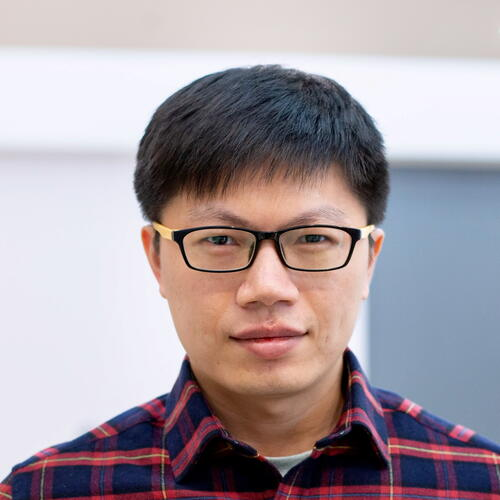

The Ohio State University Board of Trustees promoted Imageomics Institute's Dr. Yu Su to Associate Professor in the Department of Computer Science and Engineering, recognizing his outstanding achievements in teaching, research, and service.
The Board explained, “You have excelled in the areas of teaching, research and creative accomplishments, and service, and we are proud to recognize your achievements and contributions as a faculty member of The Ohio State University.”
Su's research focuses on artificial intelligence, particularly the development of language agents and large language models (LLMs) to enhance reasoning, planning, and multimodal understanding. He co-directs the Ohio State Natural Language Processing Group and leads the Machine Learning Foundations team at the NSF-funded Imageomics Institute, where he contributes to AI-driven biological discovery.
His promotion reflects a series of significant accomplishments, including receiving the 2025 Alfred P. Sloan Research Fellowship, the Lumley Interdisciplinary Research Award, and the Faculty Teaching Award from Ohio State. Su's innovative work bridges AI and biology, exemplified by projects like BioCLIP and HippoRAG, which advance interpretable machine learning models for biological research.
Dr. Su joined Ohio State in 2020 after earning his Ph.D. from the University of California, Santa Barbara, and working as a senior researcher at Microsoft Semantic Machines. His promotion highlights his leadership in AI research and his commitment to interdisciplinary collaboration.